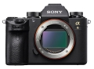
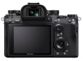
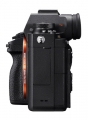
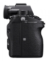
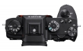
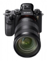

器材库 > 35mm画幅可换镜头数码相机 > α9

规格总览
产品类型
35mm画幅可换镜头数码相机
发布日期
2017-04-19
厂家推荐价格
31,999.00 （人民币）
影像规格
影像传感器
Exmor RS CMOS
影像传感器尺寸
35.6×23.8mm
总像素
2830万
有效像素
2420万
影像处理器
BIONZ X
色彩空间
sRGB, Adobe RGB 兼容特丽魅彩色彩技术
静态图像格式
JPEG, RAW
静态图像尺寸
[3:2] L：6000×4000，M：3936×2624，S：3008×2000[16:9] L：6000×3376，M：3936×2216，S：3008×1688
静态图像质量
RAW,RAW&JPEG,超精细,精细,标准
短片格式
AVCHD, MP4, XAVC S 4K, XAVC S HD
短片尺寸
XCVA S 4K: 3840×2160 XCVA S HD: 1920×1080 AVCHD: 1920×1080 (50p/50i/25p) MP4: 1920×1080 (50p/25p) MP4：1280×720 25p
防抖系统
5轴防抖
镜头和对焦
镜头卡口
Sony E
兼容镜头
索尼E卡口镜头
对焦系统类型
混合自动对焦（相位侦测/对比度检测自动对焦）
对焦点
693个相位检测自动对焦点 / 25个对比检测自动对焦点
对焦模式
AF-S / AF-C / DMF / MF
眼控对焦
是
AF辅助灯/光
有
曝光控制
测光系统
1200区测光
测光模式
点测光, 多重测光, 中心测光
测光范围
-3EV~20EV
曝光模式
智能自动/程序自动/光圈优先/快门优先/手动曝光/动态影像/调出存储(1.2.3)/S&Q（快和慢）
拍摄模式
单张拍摄, 连拍, 自拍定时
快门类型
电子控制，纵走式，焦平面快门
快门速度
机械快门：1/8000 - 30秒，B门；自动：1/32000 - 30秒，B门；电子快门：1/32000 - 30秒
闪光同步速度
1/250秒
曝光补偿
±5EV以1/3或1/2EV级调整
自动曝光锁
有
ISO感光度
静态影像： 机械快门ISO100-51200（可扩展至ISO 50-204800）,自动（ISO100-6400） 电子快门ISO100-25600（ISO可从50向上扩展）,自动（ISO100-6400） 动态影像： ISO 100-51200（ISO最高可扩展至102400）,自动（ISO100-6400）
白平衡
自动、日光、阴影、阴天、白炽灯、荧光灯（暖白色）、荧光灯（冷白色）、荧光灯（日光白色）、荧光灯（日光）、闪光灯、水中自动、色温/滤光片、自定义(1,2,3)、自定义设置
自拍
10秒/5秒/2秒
连拍
20张/秒
取景器/显示屏
取景器
电子取景器
取景范围
100%
取景放大倍率
约0.78倍
屈光度调节范围
-4.0 to +3.0m-1
LCD类型
TFT LCD
LCD尺寸
2.95英寸
LCD像素
144万
视野率
约100%
LCD特性
触摸屏, 翻转屏
亮度调节级数
手动（±2.0级）/ 晴朗天气
文件输入/输出
存储卡
MS/MS PRO记忆棒, SD/SDHC, SDXC, microSD, microSDHC, microSDXC
视频/音频接口
D型HDMI接口
无线功能
Wi-Fi, NFC, 蓝牙
电源
电池
可充电式电池组 NP-FZ100
续航能力
静态图像：约480张（取景器） / 约650张（LCD）视频：约105分钟（取景器） / 约120分钟（LCD）
机身规格
颜色
黑色
尺寸
126.9×95.6×63.0mm
重量
包括电池和存储卡约673g
其它
工作温度
0 - 40℃
附件
电源线/可重复充电电池(NP-FZ100)/线缆保护器/电源适配器/电池充电器（BC-QZ1）/肩带/Micro USB连接线/机身盖/眼罩
该产品暂无存档的网友点评
产品图 / 样片
α9

α9

α9

α9

α9

α9
评测 / 相关文章
- 详细内容 （存档）
- 旗舰单反挑战者 索尼全画幅微单A9评测 （存档）
- ［试用］索尼A9实拍样片（上） （存档）
- ［试用］索尼A9实拍样片（下） （存档）
- ［资讯］索尼A9究竟有何神力 （存档）
- ［行情］索尼A9机身国内开始预订 （存档）
- ［资讯］索尼A9用什么技术敲开专业领域大门 （存档）
- ［资讯］搭配A9新机 索尼发布一系列全新配件 （存档）
- ［资讯］索尼全画幅微单A9惊艳登场 （存档）
- ［资讯］索尼全画幅微单A9等新品图赏 （存档）
- 为速度而生 索尼A9与A7II画质对比评测 （存档）
- ［资讯］索尼A9转接佳能300mm和400mm测试 （存档）
- ［试用］索尼微单A9之北京动物园试拍 （存档）
- ［资讯］DP重新确认：索尼A9比想象的更锐利 （存档）
- ［资讯］DxO公布索尼A9传感器成绩 （存档）
- ［资讯］索尼微单迎来集体固件升级 （存档）
- ［资讯］索尼A9过热警告固件下架 （存档）
- ［资讯］Dpreview：A9画质某些方面稍微领先 （存档）
- ［资讯］三强争霸 A9/1DXII/D5宽容度比较 （存档）
- ［资讯］索尼A9电子快门性能不错 （存档）
- ［资讯］戴眼镜索尼A9也能眼控对焦 （存档）
相关文章
- ［试用］索尼A9实拍样片（上） （存档）
- ［试用］索尼A9实拍样片（下） （存档）
- ［试用］旗舰单反挑战者 索尼全画幅微单A9评测 （存档）
- ［资讯］索尼A9究竟有何神力 （存档）
- ［行情］索尼A9机身国内开始预订 （存档）
- ［资讯］索尼A9用什么技术敲开专业领域大门 （存档）
- ［资讯］索尼正式发布A9微单相机 （存档）
- ［资讯］搭配A9新机 索尼发布一系列全新配件 （存档）
- ［资讯］索尼全画幅微单A9惊艳登场 （存档）
- ［资讯］索尼全画幅微单A9等新品图赏 （存档）
- ［资讯］索尼全画幅微单旗舰A9获EISA年度相机大奖 （原站已下线）
- ［试用］索尼全画幅微单旗舰A9 日本实拍体验 （原站已下线）
- ［资讯］索尼全画幅微单旗舰A9 索尼本社纪行 （原站已下线）
- ［试用］佳能1DX2尼康D5索尼A9画质对比 （原站已下线）
- ［资讯］索尼A9系列座谈会在京召开 （原站已下线）
- ［资讯］索尼A9转接佳能300mm和400mm测试 （存档）
- ［试用］索尼微单A9之北京动物园试拍 （存档）
- ［资讯］DP重新确认：索尼A9比想象的更锐利 （存档）
- ［资讯］DxO公布索尼A9传感器成绩 （存档）
- ［资讯］索尼微单迎来集体固件升级 （存档）
- ［资讯］索尼A9过热警告固件下架 （存档）
- ［资讯］Dpreview：A9画质某些方面稍微领先 （存档）
- ［资讯］三强争霸 A9/1DXII/D5宽容度比较 （存档）
- ［资讯］索尼A9电子快门性能不错 （存档）
- ［资讯］戴眼镜索尼A9也能眼控对焦 （存档）
- ［影像］盛夏阿尔卑斯——A9 A7R3风光人物 （原站已下线）
- ［资讯］提升追焦性能 索尼推出A9固件更新 （原站已下线）
- ［资讯］索尼A9大师说 专访水下摄影师周杞楠 （原站已下线）
- ［资讯］开启专业摄影的微单时代（下） （原站已下线）
- ［资讯］开启专业摄影的微单时代（上） （原站已下线）
- ［资讯］索尼A9大师说：不同领域摄影师访谈（下） （原站已下线）
- ［资讯］索尼A9大师说：不同领域摄影师访谈（上） （原站已下线）
- ［试用］体育摄影的未来—索尼全画幅微单旗舰A9 （原站已下线）